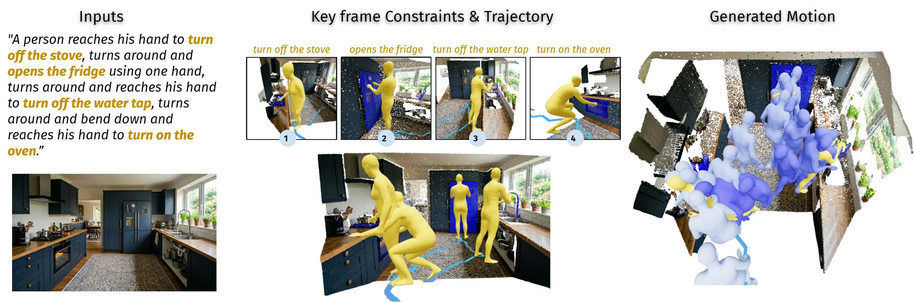
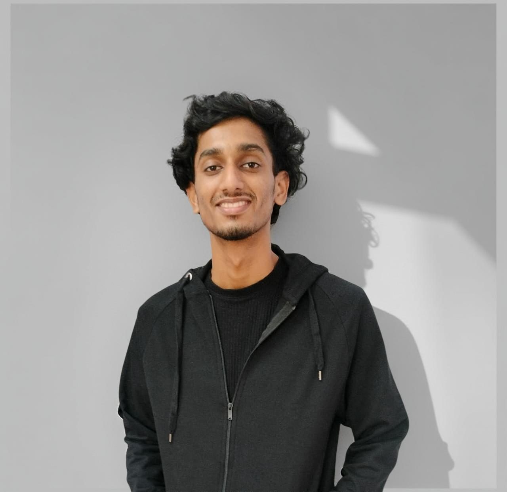
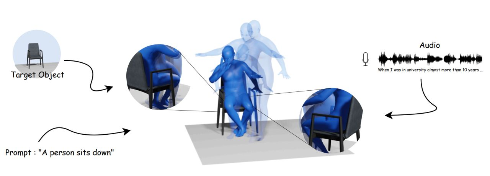
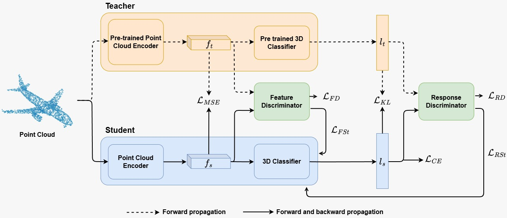
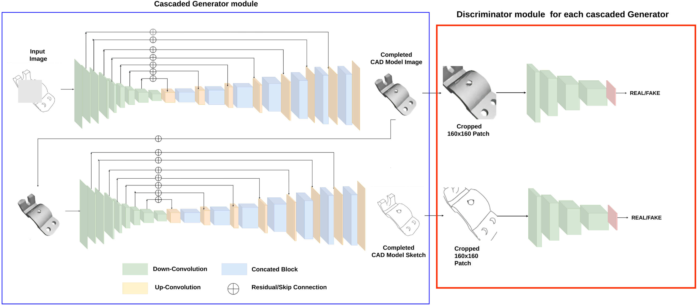

ENACT: Single-Image Human-Scene Interaction Motion from Language via Foundation-Model Orchestration
NeurIPS 2026
MS by Research @ IIITH
I am a researcher working on 3D computer vision, 3D human-scene interaction, and embodied AI. I am pursuing an M.S. by Research at the Machine Learning Lab (MLL), IIIT Hyderabad, advised by Dr. Charu Sharma. I study how to model 3D humans and their motion, and how people interact with objects and scenes, so that embodied agents can perceive and act in the physical world.




NeurIPS 2026

WACV 2026 (Oral)


3DOR 2023